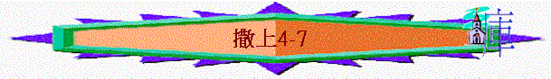

|
成 敗 與 興 衰 |
||
|
事 奉 |
民 族 |
君 王 |
|
1-3 |
4-7 |
8-31 |
二.民族的成敗(4-7)
〜1-3重點放在個別的人物中，4-7則題到整群的百姓及以色列民族，他們有失敗時間，也有復興時刻。
1.民族被擊打(4)
A.關乎百姓
a.爭戰的面對
「以色列人出去與非利士人打仗，安營在以便以謝；非利士人安營在亞弗。非利士人向以色列人擺陣。兩軍交戰的時候，以色列人敗在非利士人面前；非利士人在戰場上殺了他們的軍兵約有四千人。」4:1-2
〜以色列人與非利士人爭戰，結果被打敗
b.錯誤的舉動
(1)沒求問真神
「百姓回到營裡，以色列的長老說：「耶和華今日為何使我們敗在非利士人面前呢？我們不如將耶和華的約櫃從示羅抬到我們這裡來，好在我們中間救我們脫離敵人的手。」4:3
〜長老突然想起要枱約櫃出來，他們認為約櫃代表神，神出來，他們必得勝，但在這件事中，長老、百姓及祭司沒求問神關乎他們失敗的原因，也沒求問神可不可以抬祂的約櫃。
(2)沒檢討自己
〜百姓說耶和華為何使我們敗在非利士，他們只是提出一個問題，但沒有想想問題是否在於神那裏，還是自己任意而行，所以神藉非利士人管教他們，他們沒因此得反醒，更沒有向神回轉。
(3)沒按神法則
「於是百姓打發人到示羅，從那裡將坐在二基路伯上萬軍之耶和華的約櫃抬來。以利的兩個兒子何弗尼、非尼哈與神的約櫃同來。」4:4
〜昔日，約櫃是代表神同在的地方，約櫃是放在幔子內的，除非有神的引導，會幕要搬走，約櫃才要枱出來，否則人不能胡亂擺放或移走約櫃，但各人任意而行，不按常規及法則，喜歡怎樣做，就怎樣處理。
(4)沒捉緊關鍵
「只要剛強，大大壯膽，謹守遵行我僕人摩西所吩咐你的一切律法，不可偏離左右，使你無論往那裡去，都可以順利。」書1:7
〜人所著重的是外表的勝利，但人卻沒有抓緊屬靈關鍵，人若不遵行神的吩咐，即使外表上有約櫃、有會幕、有人多馬多的軍力，但至終仍不會順利，也得不到神的保佑！
c.最終的慘敗
(1)所期望的結局──剛相反
「耶和華的約櫃到了營中，以色列眾人就大聲歡呼，地便震動。」4:5
「非利士人哪，你們要剛強，要作大丈夫，免得作希伯來人的奴僕，如同他們作你們的奴僕一樣。你們要作大丈夫，與他們爭戰。」非利士人和以色列人打仗，以色列人敗了，各向各家奔逃，被殺的人甚多，以色列的步兵仆倒了三萬。」4:9-10
〜以色列人知道約櫃來，他們就大聲歡呼，眾人也想像這次戰役上他們必得勝，結局卻相反，約櫃來臨，反激發敵人士氣，令他們更剛強，終殺敗以色列人，仆到有三萬人！
(2)所矜誇的約櫃──被擄去
「神的約櫃被擄去，以利的兩個兒子何弗尼、非尼哈也都被殺了。」4:11
〜當人得罪神時，神可以放棄代表祂榮耀的約櫃(也是以色列人所誇耀的)被外邦人擄去
B.關乎領袖
a.他們的問題
(1)兒子----有屬靈的職份卻任意而行
〜作為祭司的何弗尼、非尼哈應知道約櫃是神聖的，不可以隨意抬走，但他們竟擅自抬神的約櫃出來，任意而行。
(2)父親----有屬靈的知識卻沒有禁止
「到了的時候，以利正在道旁坐在自己的位上觀望，為神的約櫃心裡擔憂。那人進城報信，合城的人就都呼喊起來。」4:13
〜以利為神的約櫃心裏擔憂，他作為大祭司，作為士師應知道勝敗的關鍵不在乎人有沒有抬約櫃出去，他也為約櫃擔憂，可能心裏也覺有些不妥，但他身為領袖，沒有禁止勸戒長者及兒子的行為。
b.預言的應驗
(1)看見神居所敗落
「在神使以色列人享福的時候，你必看見我居所的敗落。在你家中必永遠沒有一個老年人。」2:32
「那人對以利說：「我是從陣上來的，今日我從陣上逃回。」以利說：「我兒，事情怎樣？」報信的回答說：「以色列人在非利士人面前逃跑，民中被殺的甚多！你的兩個兒子何弗尼、非尼哈也都死了，並且神的約櫃被擄去。」」4:16-17
〜他真是在有生之年看見神居所敗落，約櫃被擄慘痛情況
(2)兩兒子同一日死
「你的兩個兒子何弗尼、非尼哈所遭遇的事可作你的證據：他們二人必一日同死。」2:34
(3)家庭終必被審判
「我曾告訴他必永遠降罰與他的家，因他知道兒子作孽，自招咒詛，卻不禁止他們。」3:13
「他一提神的約櫃，以利就從他的位上往後跌倒，在門旁折斷頸項而死；因為他年紀老邁，身體沉重。以利作以色列的士師四十年。」4:18
〜最後以利也從位上跌倒，在門旁折斷而死，他的兒子與他自己也受神的審判
(4)不滅盡他家中人
「我必不從我壇前滅盡你家中的人；那未滅的必使你眼目乾癟、心中憂傷。你家中所生的人都必死在中年。」2:33
「以利的兒婦、非尼哈的妻懷孕將到產期，他聽見神的約櫃被擄去，公公和丈夫都死了，就猛然疼痛，曲身生產；將要死的時候，旁邊站著的婦人們對他說：「不要怕！你生了男孩子了。」他卻不回答，也不放在心上。
他給孩子起名叫以迦博，說：「榮耀離開以色列了！」這是因神的約櫃被擄去，又因他公公和丈夫都死了。」4:19-21
〜神真沒滅盡他家中所有人，兒婦為他們家庭產下一兒子，起名以迦博(意思沒有榮耀)
〜但神的榮耀是否因為約櫃被擄而失去呢？下文有交待
2.仇敵被擊打(5-6:16)
〜約櫃雖被擄，但神要在外邦人中顯祂的榮耀
A.神擊打偶像
「非利士人將神的約櫃抬進大袞廟，放在大袞的旁邊。」5:2
〜「大袞」是非利士神祇，有說是魚神，另一說是農業五穀之神
a.在神前伏下
「次日清早，亞實突人起來，見大袞仆倒在耶和華的約櫃前，臉伏於地，就把大袞仍立在原處。」5:3
b.在神前折斷
「又次日清早起來，見大袞仆倒在耶和華的約櫃前，臉伏於地，並且大袞的頭和兩手都在門檻上折斷，只剩下大袞的殘體。」5:4
〜第二次仆倒，明顯不是巧合
B.神擊打人民
「耶和華的手重重加在亞實突人身上，敗壞他們，使他們生痔瘡。亞實突和亞實突的四境都是如此。」5:6
C.神擊打城巿
「就打發人去請非利士的眾首領來聚集，問他們說：「我們向以色列神的約櫃應當怎樣行呢？」他們回答說：「可以將以色列神的約櫃運到迦特去。」於是將以色列神的約櫃運到那裡去。運到之後，耶和華的手攻擊那城，使那城的人大大驚慌，無論大小都生痔瘡。他們就把神的約櫃送到以革倫．．．．．．原來神的手重重攻擊那城，城中的人有因驚慌而死的；」5:8-11
〜「迦特」、「以革倫」為非利士王域之中的城巿
D.神顯祂威榮
a.令人感到懼怕
「運到之後，耶和華的手攻擊那城，使那城的人大大驚慌，無論大小都生痔瘡。」5:9
「．．．．．．城中的人有因驚慌而死的；」5:11
〜神是可畏的，當神的刑罰臨到人時，非利士人可因驚慌而死！
b.不用一兵一卒
「耶和華的約櫃在非利士人之地七個月。非利士人將祭司和占卜的聚了來，問他們說：「我們向耶和華的約櫃應當怎樣行？請指示我們用何法將約櫃送回原處。」」6:1-2
〜神的約櫃被擄，但神的能力沒滅退，祂不用一兵一卒，可令人送回約櫃！
c.令人向神賠罪
「他們說：「若要將以色列神的約櫃送回去，不可空空地送去，必要給他獻賠罪的禮物，然後你們可得痊愈，並知道他的手為何不離開你們。」非利士人說：「應當用什麼獻為賠罪的禮物呢？」他們回答說：「當照非利士首領的數目，用五個金痔瘡，五個金老鼠，因為在你們眾人和你們首領的身上都是一樣的災。」6:3-4
〜古代用此方法作驅走災禍之用，金瘡扺毒瘡，金鼠扺老鼠
d.使人歸榮于神
「所以當製造你們痔瘡的像和毀壞你們田地老鼠的像，並要歸榮耀給以色列的神，或者他向你們和你們的神，並你們的田地，把手放輕些。你們為何硬著心像埃及人和法老一樣呢？神在埃及人中間行奇事，埃及人豈不釋放以色列人，他們就去了嗎？現在你們應當造一輛新車，將兩隻未曾負軛有乳的母牛套在車上，使牛犢回家去，離開母牛。」6:5-7
〜神不是用選民榮耀祂自己，祂用祂的大能令仇敵也看到神的榮耀，要尊敬神(將未曾負軛的母牛及新車作運約櫃之用)，也要將榮耀歸給神。
e.使人見神工作
「你們要看看：車若直行以色列的境界到伯示麥去，這大災就是耶和華降在我們身上的；若不然，便可以知道不是他的手擊打我們，是我們偶然遇見的。」6:9
「牛直行大道，往伯示麥去，一面走一面叫，不偏左右。非利士的首領跟在後面，直到伯示麥的境界。」6:12
「非利士人的五個首領看見，當日就回以革倫去了。」6:16
〜牛沒有人指揮，但牠能不偏左右直往伯示麥去，証明並非偶然之事，神真是在約櫃中作引導的工作。
3.褻瀆者被擊打(6:17-21)
A.有獻上祭物的行動
「利未人將耶和華的約櫃和裝金物的匣子拿下來，放在大磐石上。當日伯示麥人將燔祭和平安祭獻給耶和華。」6:15
B.沒分別為聖的謹守
「耶和華因伯示麥人擅觀他的約櫃，就擊殺了他們七十人；那時有五萬人在那裡（原文作七十人加五萬人）。百姓因耶和華大大擊殺他們，就哀哭了。伯示麥人說：「誰能在耶和華這聖潔的神面前侍立呢？這約櫃可以從我們這裡送到誰那裡去呢？」於是打發人去見基列耶琳的居民，說：「非利士人將耶和華的約櫃送回來了，你們下來將約櫃接到你們那裡去吧！」」6:19-21
「起營的時候，亞倫和他兒子要進去摘下遮掩櫃的幔子，用以蒙蓋法櫃，又用海狗皮蓋在上頭，再蒙上純藍色的毯子，把槓穿上。」民4:5-6
「只是他們連片時不可進去觀看聖所，免得他們死亡。」民4:20
〜伯示麥人沒照聖經吩咐謹守自己，竟私自觀看約櫃，他們當中有人被神擊殺，他們就對神更產生可畏神聖感覺，於是打發人將約櫃送至基列耶琳那裡
4.至終得復興(7)
A.靈性得復興
a.需要神的同在
「基列耶琳人就下來，將耶和華的約櫃接上去，放在山上亞比拿達的家中，分派他兒子以利亞撒看守耶和華的約櫃。」7:1
〜約櫃代表神的臨在，重歸以色列，代表神仍與以色列人同在
b.需要人的謹守
〜約櫃在以色列地後，人若要蒙神喜悅，必須看守約櫃，不要讓人再擅自觀看
c.需要時間等候
「約櫃在基列耶琳許久。過了二十年，以色列全家都傾向耶和華。」7:2
〜神有時不是一下子改變人的心，祂用時間等候扭轉
d.需要神僕提醒
「撒母耳說：「要使以色列眾人聚集在米斯巴，我好為你們禱告耶和華。」他們就聚集在米斯巴，打水澆在耶和華面前，當日禁食，說：「我們得罪了耶和華。」於是撒母耳在米斯巴審判以色列人。」7:5-6
〜撒母耳仍然在以色列地傳講神的話，提醒人要離棄偶像。
e.需要禱告認罪
〜他們要禁食禱告神，為自己的罪難過
〜「打水澆在耶和華面前」可能是宗教儀式，象徵悔改及贖罪
f.需要行為轉變
「撒母耳對以色列全家說：「你們若一心歸順耶和華，就要把外邦的神和亞斯他錄從你們中間除掉，專心歸向耶和華，單單地事奉他。他必救你們脫離非利士人的手。」以色列人就除掉諸巴力和亞斯他錄，單單地事奉耶和華。」7:3-4
〜以色列人不單認罪，他們是有行動轉變，聽從了撒母耳的吩咐，除掉偶像，單單事奉神
B.仇敵被擊倒
a.在復興中遇到困難
「非利士人聽見以色列人聚集在米斯巴，非利士的首領就上來要攻擊以色列人。以色列人聽見，就懼怕非利士人。」7:7
〜以色列人認罪歸向神時，他們遇到非利士人攻擊，原來人在復興中，不代表不會遇到困難的
b.在危機中呼求真神
「以色列人對撒母耳說：「願你不住地為我們呼求耶和華我們的神，救我們脫離非利士人的手。」撒母耳就把一隻吃奶的羊羔獻與耶和華作全牲的燔祭，為以色列人呼求耶和華；耶和華就應允他。」7:8-9
〜昔日不能空手來到神面前，尋求神的必會獻祭，撒母耳為百姓獻祭禱告，呼求神的幫助
c.在呼求中得幫助
「撒母耳正獻燔祭的時候，非利士人前來要與以色列人爭戰。當日，耶和華大發雷聲，驚亂非利士人，他們就敗在以色列人面前。以色列人從米斯巴出來，追趕非利士人，擊殺他們，直到伯甲的下邊。撒母耳將一塊石頭立在米斯巴和善的中間，給石頭起名叫以便以謝，說：「到如今耶和華都幫助我們。」7:10-12
「以色列人出去與非利士人打仗，安營在以便以謝；非利士人安營在亞弗。」4:1
〜結果神應允他們，使以色列人得勝
〜「以便以謝」意思為「幫助的石頭」，本來是沙崙平原上的地名，撒母耳今立石為記可能表示先前以便以謝一役失敗的羞辱已經洗脫。